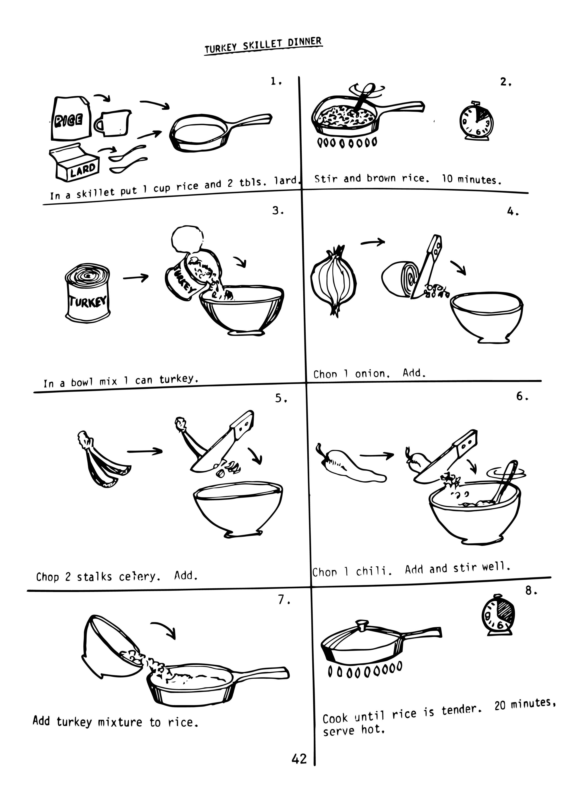

┦Navajo Homemaker EFMS Cookbook┞
Compiled by the Office of Navajo Economic Opportunity (ONEO) Emergency Food Navajo Homemaker Program in 1971, the Navajo Homemaker EFMS (Emergency Food and Medical Services) Cookbook was a guide for Navajo women on how to use USDA (United States Department of Agriculture) donated commodity goods. It also included information for mothers on how to feed infants. One individual is credited in the book, Mr. Paul Natonabah, the ONEO staff artist who created all the illustrations to accompany the text. No colophon exists which would provide contextual information regarding the rest of the participants in this project or credit given to the Navajo women who made contributions to the content.
All recipes in this cookbook include pictorial instructions for those who were literate in the English language. Actions are illustrated with arrows, quantity is expressed by how many times the object appears, a clock illustrates time instructions, and heat is shown with fire illustrations or the oven. Each page is divided in half with either 6 or 8 sections, outlined in black dividers, with each recipe having one whole page. The cookbook uses plain spoken english. It is not overly wordy or elaborate as the Navajo tribe had a functional illiteracy rate of over 51% in the 1970’s. This is an inexpensively produced book. The exterior is a heavy cardstock and the pages are spiral bound. There are a few printing errors and the printing is generally misaligned. The price on the cover is 50 cents, which would be $3.18 in 2020.
